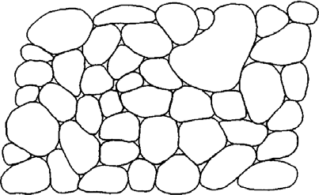
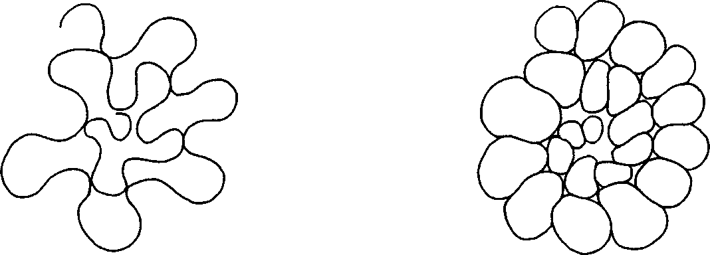

14 Peirce en torno a mecanismos cognitivos con carga inferencial
Introducción
Dentro de los numerosos escritos de Charles Sanders Peirce en relación con la abducción en sus diversas versiones a lo largo de su obra filosófica, lógica y científica, su vinculación con la percepción resulta un tanto dilemática y requiere de cierta explicación, a la que nos abocaremos en este trabajo.
Por un lado, distintos autores han tendido general y mayoritariamente a entender a la percepción como inmediata, directa e infalible. Pero, por otro lado, Peirce aporta una interpretación abductiva de la misma, que:
la convierte en un tipo de inferencia, y, por tanto, en un mecanismo mediato;
recepta la nueva información conseguida de manera indirecta, donde el estímulo queda subdeterminado por la respuesta; y, finalmente
hace que ella sea falible, dada su naturaleza abductiva, y, por ende, plausible y conjetural en algún grado o medida: “[no puedo] pretender una certeza absoluta respecto a cualquier asunto de hecho” (Peirce 1903, OFR 2, Conferencia Harvard VI: 274).
Así, la percepción para Peirce es el producto de una actividad mediatizada inferencialmente e interactiva entre la estimulación con la que entra en contacto, y la interpretación que el sujeto percipiente realiza, además de ser faliblemente concebida.
Una pregunta que naturalmente emerge de lo planteado es acerca de qué lo llevó a Peirce a realizar la afirmación de que la percepción es inferencial. Más precisamente, importa dilucidar en qué sentido es posible asignarle a la percepción una carga inferencial. Y no sólo eso: ¿A qué otros mecanismos cognitivos Peirce atribuye un potencial inferencial y de qué tipo? La presente ponencia discutirá, en primer lugar, en la sección 2, el papel inferencial de la percepción para el caso particular de percepciones realizadas en actos creativos. En segundo lugar, en el inciso 3, el rol que adquieren las asociaciones de diverso tipo en términos inferenciales. Este apartado busca mostrar que los procesos creativos se inician con cierto tipo de percepciones que podemos describir en términos de asociaciones, y que éstas últimas adquieren así un nivel inferencial. Finalmente reuniremos en la conclusión, los resultados obtenidos.
El papel inferencial de la percepción en los escritos de Peirce en casos de procesos creativos
Es bien sabido que Peirce afirma que hasta la percepción es inferencial, i.e. “un caso extremo de inferencias abductivas” (Peirce 1903, EP 2: 227/OFR 2: 293). Pero poco se ha discutido sobre qué lo llevó a Peirce a realizar tal afirmación. ¿En qué sentido es posible asignarle a la percepción una carga inferencial? En el caso que nos ocupa, cuando estos procesos perceptivos se producen en la conformación de una respuesta creativa a un problema científico a resolver, estas percepciones forman parte de transiciones abductivas, aunque podemos decir que, en general Peirce vincula a la percepción con la abducción, más allá de estos casos.
Sostenemos que el proyecto de Peirce de convertir a la percepción en un tipo de argumentación abductiva fue impulsado por su gran preocupación por la búsqueda de un método que permitiera describir una disciplina científica cualquiera. Más aún, tal hallazgo de un método debía realizarse en términos lógicos. Y del modo peculiar como Peirce entendía a la lógica.
En primer lugar, entendía a la lógica como una ciencia (Eisele 1979, 255) que, en general no era la tendencia general en su época, considerándola sólo una propedéutica preparatoria para las demás ciencias. En particular, mediante la adquisición de un método, la lógica misma pasaría a convertirse en exacta “en el mismo sentido en el cual hablamos de las ciencias como siendo exactas, entendiendo con esto aquellas ciencias cuya exactitud está garantizada por sus métodos matemáticos” (Eisele 1979, 256).
En segundo lugar, Peirce era un ferviente partidario de conseguir desarrollar y/o refinar el análisis de los procesos lógicos asociados a la creatividad e innovación en ciencia, en términos de la inferencia que, según él, era la apropiada y la única que podría sobrellevar el proyecto de describir originalidad creativa: la abducción (Peirce 1903, CP 5.171).
En tercer lugar, en sus sucesivas y diversas variantes de la abducción que Peirce fue trabajando a lo largo de su vida, siempre existía implícitamente una vinculación de este tipo de inferencia con la búsqueda de un método unificado para tratar las cuestiones científicas. Si al principio de sus trabajos, la abducción era sólo uno de los tres tipos de inferencias existentes para él con los que podrían contar las ciencias, más adelante propuso que la abducción constituyera la primera etapa en este método que él intentaba caracterizar. Veremos que el papel de la percepción en la pesquisa y descripción de este método perseguido es crucial.
En relación con esto, consideramos que el elemento central en el pensamiento de Peirce que explica por qué la percepción, según su criterio, es inferencial, radica en su convicción en contra de la existencia de cogniciones no determinadas por cogniciones previas (por caso, intuiciones, datos de los sentidos e impresiones suelen ser considerados de este tipo). En este punto, Peirce asume una posición contraria a René Descartes en su caracterización de la noción de intuición, atribuyéndole al filósofo francés una intuición inmediata, directa, infalible, y no precedida por conocimientos previos (Peirce 1868, CP 5.213). Esta independencia termina haciendo incognoscible a la intuición cartesiana (Peirce 1868, CP 5.259-5.263). En cambio, Peirce asume que existe continuidad del conocimiento; que cada pensamiento depende, para su producción, de conocimientos y/o experiencias previas, y que cada conocimiento es signo de otro conocimiento consecuente (Peirce c. 1905, CP 2.755).
Por ende, la producción de novedad expresada por la aparición de insights creativos, según Peirce, debe hacerse por medio de inferencias. Más concretamente, para generar una hipótesis, se utiliza la abducción. Y este proceso comienza con la presencia de una percepción, que también es inferencial: lo que él denomina “juicios perceptivos”. En realidad, Peirce cae en un regreso al infinito cuando tiene que describir cómo se inician los actos creativos, apelando a procesos perceptivos que, a su vez, apelan a otros más:
Todo lo que puedo significar por un juicio perceptual es un juicio que me veo absolutamente forzado a aceptar debido a un proceso que soy totalmente incapaz de controlar y por consiguiente incapaz de criticar (…) Ahora bien, consideren el juicio de que un acontecimiento C parece ser posterior a otro acontecimiento A. Ciertamente, puedo haber inferido esto porque puedo haber advertido que C era posterior a un tercer acontecimiento B que era en sí mismo posterior a A. Pero entonces estas premisas son juicios de la misma descripción. No parece posible que pueda haber realizado una serie infinita de actos de crítica, cada uno de los cuales debe requerir un esfuerzo distinto. (Peirce 1903, VI Conferencia Harvard, OFR 2: 274)
Así, los actos perceptivos, en realidad son procesos que sólo podemos singularizar como actos cuando buscamos comprenderlos analíticamente, pero que se dan de manera continua. Esta naturaleza procesual de la percepción está teñida de inferenciabilidad, del tipo abductiva: “la facultad abductiva, mediante la que adivinamos los secretos de la naturaleza, es, podemos decir, una sombra, una gradación de aquello que en su perfección más alta llamamos percepción” (Peirce 1903, VI Conferencia Harvard, OFR 2: 288). Estos juicios perceptuales adquieren su naturaleza inferencial abductiva precisamente por constituir el primer paso de un proceso cognitivo, y por ello ser admitidos forzosamente sin control alguno:
Clasifique como clasifique el psicólogo tal juicio forzoso, para el lógico sería perceptual, siendo para él la percepción simplemente lo que la experiencia—es decir, la sucesión de lo que le sucede—lo obliga a admitir inmediatamente y sin razón alguna. Este juicio, entonces, tiene que ser inferido. ¿Cómo puede inferirse? Sólo por la abducción, claro está, porque la abducción es el único proceso por el que puede introducirse un nuevo elemento en el pensamiento, y se supone expresamente que se trata aquí de aquel juicio en el que la concepción en cuestión aparece primero. (Peirce 1903, VI Conferencia Harvard, OFR 2: 288-289)
Es esta imposibilidad de negar la presencia de los juicios perceptivos lo que los hace, en algún sentido diferentes de las demás inferencias abductivas, que pueden refutarse si el contexto así lo determinara:
El único síntoma por el que ambos [el juicio abductivo y el juicio perceptual] pueden distinguirse consiste en que no podemos formar la más mínima concepción de lo que sería negar el juicio perceptual (…) Una sugerencia abductiva, sin embargo, es algo cuya verdad sí puede ser cuestionada o incluso negada. (Peirce 1903, VII Conferencia Harvard, OFR 2: 295-296)
Cabe aclarar que la noción de percepción en Peirce está compuesta de una tríada, uno de cuyos elementos es el juicio perceptivo, pero no el único. Además, en segundo lugar, existe el percepto, como elemento sensorial particular que provoca el juicio, pero que lo hace convirtiendo tal particularidad en un mecanismo general: lo que se presenta se integra como una categoría asumida hipotéticamente y no simplemente como algo dado, como un dato pasivamente incorporado de los sentidos:
Una vez que tengo un percepto, puedo contemplarlo y decirme a mí mismo: ‘Eso parece ser una silla amarilla’; y nuestro lenguaje usual es que ‘percibimos’ que es una silla amarilla, aunque esto no es un percepto, sino un juicio sobre un percepto presente. (Peirce 1903, Telepathy and Perception, CP 7.626)
En tercer lugar, está el percipuum, que juega el papel de un elemento intermediario que, de alguna manera se encarga de traducir al percepto singular en un modo general capaz de ser interpretado en términos de un juicio perceptual. De esta manera, el percepto nunca ingresa en nuestro sistema cognitivo tal cual es, sino como perceptuum, i.e. en términos generales:
Tal vez se me permita inventar el término percipuum para incluir tanto el percepto como el juicio perceptivo. (Peirce 1903, Telepathy and Perception, CP 7.629)
En el momento en que fijamos nuestra mente en él [el percepto] y pensamos la mínima cosa sobre el percepto, es el juicio perceptivo el que nos dice lo que así ‘percibimos’.
Por esta y otras razones, propongo considerar el percepto tal como se interpreta inmediatamente en el juicio perceptivo, bajo el nombre de ‘percipuum’. El percipuum, entonces, es lo que se impone a su reconocimiento, sin ningún por qué ni para qué, de modo que si alguien se pregunta por qué deberías considerar que aparece así y así, todo lo que puedes decir es: ‘No puedo evitarlo’. Así es como yo lo veo. (Peirce 1903, CP 7.643)
Lo expuesto respecto a la tríada que constituye el modelo de la percepción en Peirce pone en evidencia el carácter inferencial de la misma, en tanto que todo percepto inmediatamente, o, mejor dicho, mediatizado por un juicio perceptivo, se hace presente ante nuestra conciencia.
En la sección siguiente buscamos mostrar cómo estos juicios perceptivos se integran en un programa más general de asociaciones inferenciales, que configuran así un proceso de formación de ideas creativas.
El rol de las asociaciones en los procesos inferenciales creativos
En lo que sigue mostraremos una interpretación peirceana acerca de los actos creativos en contextos científicos. En forma análoga a lo que dijimos de la percepción en Peirce, tales actos creativos, en realidad no se reducen a meros actos, sino que constituyen procesos o transiciones donde la abducción es la inferencia principal que los gobierna. Hasta aquí es el dictum tradicional del mismo Peirce.
Sin embargo, y aún cuando Peirce no lo hubiera explicitado, es posible atribuirle al mismo una caracterización implícita un tanto más detallada y refinada del proceso creativo: incluir, junto con la abducción propiamente dicha, otros mecanismos inferenciales que son de naturaleza asociativa, y que dan una versión ampliada de la abducción, al modo como metafóricamente es posible detectar más información utilizando una lupa para ver mejor. Aplicándola, podemos observar en otro nivel interpretativo que el proceso abductivo creativo comienza con una percepción evocativa que denominamos “asociación por semejanza o similaridad”. Continúa a esta asociación, una transferencia analógica de la información aportada por la semejanza percibida. Y termina con una explicación abductiva propiamente dicha del por qué de la elección de tal percepción evocativa.
Hemos dado en llamar a este proceso formado por los tres tipos de transiciones, “argumentación transductiva” (Visokolskis 2009, 2016, 2021; Visokolskis, Vargas, y Carrión 2020) como una ampliación propuesta a partir de los trabajos peirceanos explícitos, más allá de ir en contra de su insistencia -en sus escritos tardíos- de que lo que lleva a formar una hipótesis creativa es un instinto (Peirce 1907, CP 7.38; MS 692:24; HP 2:898–899, 1901).
En esta primera etapa asociativa arriba mencionada, que afirmamos está presente en los escritos de Peirce, nos referimos a la caracterización de la percepción realizada en pos del procesamiento de información tendiente a resolver un problema que conduce a ofrecer una solución creativa del mismo. Dicho de otra manera, nos focalizaremos en casos de percepción vinculados a la búsqueda de una respuesta creativa a un problema formulado en un contexto científico.
Sabemos que, para Peirce, la única inferencia que introduce novedad es la abducción y que ésta constituye, por tanto, la primera etapa de una investigación científica, aportando la formación y adopción de una hipótesis. Aunque conviene observar que Peirce, en las últimas fases de su vida, se inclinó a optar por el instinto para descubrir cómo se formaban las hipótesis (instinto para acertar o para conjeturar, i.e. “instinct to guess”). Así, Peirce separaba una primera tarea abductiva de formación de hipótesis como instintiva, respecto de una segunda tarea de adopción y selección de una hipótesis, un tanto más inferencial.
En diversos artículos anteriores hemos ofrecido una respuesta ligeramente diferente de la respuesta instintiva a la formación de conjeturas que Peirce planteó: asumimos que, en cambio es la intuición experta -y no la intuición al modo como Peirce entendía que era la cartesiana- quien guía este proceso creativo. Entendemos la expertise como conocimiento y experiencia adquirida, más allá de cualquier facultad propia de un agente creador, que pueda o no estar disponible.
Para mostrar la eficacia del modelo transductivo de creatividad aquí sólo esbozado muy sucintamente, que comienza con los juicios perceptivos evocadores de un problema similar B del problema A que buscamos resolver creativa y originalmente, presentaremos un ejemplo del dominio de la matemática que Peirce tomó de su padre, el matemático Benjamin Peirce. Allí podremos observar cuáles son los mecanismos inferenciales iniciales que caracterizan al proceso creativo de solución de un problema A.
Se trata del caso de una curva que, una vez dibujada completamente, deja de parecerse a una curva, para entenderse como un aglomerado de pequeñas curvas cerradas independientes entre sí, pero todas puestas ensimismadas, conformando lo que aparece fenoménicamente como una pared de piedras.
El problema A que Peirce presenta1 es entonces cómo interpretar este conjunto de aparentes piedras como una curva. La siguiente cita, aunque extensa, refleja bien cómo Peirce hijo interpreta el dibujo que Peirce padre planteó. Hemos resaltado en itálicas las frases de esta cita que mejor resumen todo el texto:
Les mostraré una figura que recuerdo que mi padre dibujó en una de sus conferencias. No recuerdo qué se suponía que mostraba, pero no puedo imaginar qué otra cosa pudo haber sido salvo mi proposición cotaria número dos. Si es así, al sostener esa proposición estaré siguiendo sustancialmente sus huellas, aunque sin duda él habría puesto la proposición en una forma muy distinta a la mía. Aquí está la figura (aunque no la puedo dibujar con tanta destreza como él). Consiste en una línea sinuosa. Pero cuando se dibuja completamente, parece un muro de piedra. El punto es que hay dos maneras de concebir esta cuestión. Les ruego que se den cuenta de que ambas son maneras generales de clasificar a la línea, clases generales bajo las cuales se subsume la línea. Pero la preferencia muy clara de nuestra percepción por un modo de clasificar el percepto muestra que esta clasificación está contenida en el juicio perceptual.2 (…) En toda ilusión visual de este tipo, de las que dos o tres docenas son bien conocidas, lo más sorprendente es que una cierta teoría de la interpretación de la figura tiene toda la apariencia de ser dada en la percepción. La primera vez que se nos muestra, parece tan completamente más allá del control de la crítica racional como lo está cualquier percepto, pero tras muchas repeticiones del experimento ahora familiar, la ilusión se debilita, volviéndose primero menos marcada y finalmente cesando por completo. Esto muestra que esos fenómenos son verdaderos lazos de conexión entre abducciones y percepciones.3 Si el percepto o el juicio perceptual fuesen de una naturaleza totalmente distinta de la abducción, uno esperaría que aquél no tuviera ninguno de los caracteres que son propios de las interpretaciones, mientras que es casi seguro que tendría tales caracteres si fuera meramente una serie continua de lo que, ejecutado discreta y conscientemente, serían las abducciones. Aquí tenemos entonces una prueba casi crucial de mi tercera proposición cotaria. Ahora bien, ¿cómo es el hecho? El hecho es que no es necesario ir más allá de las observaciones ordinarias de la vida común para encontrar una variedad de maneras ampliamente diferentes en que la percepción es interpretativa.4 (Peirce 1903, OFR 2: 294-295)

Como esta cita lo muestra, ya Peirce hijo comprende, al percibir la figura 1, qué está sucediendo allí, i.e., de dónde proviene este esquema. Esto lo muestra visual y diagramáticamente en otro texto, titulado ¿Qué es un signo? (Peirce c. 1894, OFR 2: 53-54, MS 404), a partir de otras dos figuras, figura 2a y figura 2b, que operan conjunta y secuencialmente:

En las figuras 2a y 2b aparece visualmente el modo de construcción de la figura 1, i.e., el proceso efectivo de esta génesis. Charles Peirce refuerza su argumento diagramático, con las siguientes palabras:
Supongamos que tenemos una curva sinuosa, con puntos continuos donde la curvatura cambia del sentido de las manecillas del reloj al contrario e, inversamente, como en la figura [2a]. Supongamos además que esta curva continúa de tal manera que se cruza consigo misma en todo punto tal de doblamiento a la inversa en otro punto tal. El resultado aparece en la figura [2b]. Puede describirse como un número de óvalos apiñados, como si fuera por presión. Sin las figuras, uno no percibiría que la primera descripción y la segunda son equivalentes. (Peirce c.1894, OFR 2: 53)
Cabe observar que la relación entre ambas figuras 2a y 2b se debe a su desarrollo genético que comienza en el formato de la figura 2a y acaba en el dibujo de la figura 2b. Es así como Peirce hijo resuelve creativamente y de manera diagramática el problema planteado, aportando una serie de dos figuras ordenadas secuencialmente, tales que la segunda resulta de completar la primera.
No es nada extraño en los escritos de Peirce que los problemas matemáticos se resuelvan de manera icónica y no proposicional. Todo lo contrario: Peirce innova en ofrecer en el contexto de la lógica un sistema diagramático, sus grafos existenciales. Mediante estos esquemas figurativos, podemos apreciar un proceso de formación de la figura 2b, que sin la presencia de la figura 2a, puede pasar desapercibida. Es precisamente la construcción de la figura 2b a partir de la figura 2a, lo que se impone para construir el perceptuum, y, con él, el juicio perceptivo correspondiente.
Observemos que el juicio perceptivo en formato diagramático es la secuencia misma de la figura 2a seguida de la figura 2b. En este último texto citado, Peirce propone el ejemplo en el marco de una explicitación de la noción de semejanza que caracteriza al concepto de signo icónico o simplemente ícono. En efecto,
Un ícono es un signo que se refiere al objeto que denota meramente en virtud de caracteres que le son propios, y que posee, igualmente, exista realmente o no tal objeto (...) Cualquier cosa, sea cualidad, individuo existente, o ley, es un ícono de cualquier cosa, en la medida en que es semejante a esa cosa y se usa como signo de ella. (Peirce 1903, CP 2.247).
Para reforzar las ideas impartidas en el caso del ejemplo matemático de tal curva cerrada, presentamos otro ofrecido por Peirce de manera discursiva en (OFR 2: 53), que hemos parafraseado aquí en términos argumentativos:
\(P1\) En general, los burros son animales obstinados.
\(P2\) Las cebras parecen asemejarse a los burros.
\(C\) Es plausible que las cebras sean obstinadas.
Este argumento presenta una inferencia analógica a partir de la asociación por semejanza producida entre cebras y burros. Dicha asociación parte de un juicio perceptivo que compara cebras con burros, además de información experta previamente obtenida respecto de las características básicas de ambas clases de animales no humanos.
Así, las cebras heredan por transferencia analógica una propiedad que tiende a generalizarse en la descripción de los burros: su obstinación. Este ejemplo de tipo proposicional es similar al anterior ejemplo diagramático en el cual las figuras 2a y 2b son semejantes, o, como dice Peirce en la cita de arriba, son equivalentes. Pero sin el proceso de transición inferencial de 2 a 3, no sería fácil lograr captar esta situación.
En resumen, los estudios de caso planteados en esta sección, ya sea presentados en formato proposicional o diagramático, muestran cómo la resolución de un problema dado A depende para su solución creativa, de la evocación perceptiva de otro problema B conocido debido a cierta expertise previamente adquirida. Una vez que se logró captar la semejanza implícita entre ambos dominios A y B, es posible aventurar una transposición analógica, extrapolando del dominio conocido B alguna característica solución del mismo hacia el otro dominio A que busca alguna respuesta plausible. Por último, resulta relevante preguntarse por qué se generó la hipótesis abductiva de resolver A en términos prestados del contexto B, cuya respuesta, en casos favorables como los presentados aquí -que no siempre suceden dada la falibilidad de este tipo de argumentación transductiva-, amplía el conocimiento dentro de A. Así, la solución plausible del problema A adquiere el formato de hipótesis abductiva, que cierra el ciclo transductivo, abriendo entonces ahora la posibilidad de que esta argumentación transductiva sea testeada y corroborada por medio de otros tipos de inferencias inductivas y deductivas, según el esquema metódico peirceano.
Conclusiones
En este trabajo se buscó mostrar cómo la caracterización peirceana de la percepción podía expresarse en términos inferenciales abductivos. En particular, avanzamos la hipótesis que Peirce no sólo describió a los juicios perceptivos abductivamente, sino que también ellos constituyen el primer paso de un proceso cognitivo, compuesto por asociaciones por semejanza, que adquieren, en este contexto, un carácter inferencial.
Referencias
Problema narrado en sus Harvard Lectures VII del 14 de mayo de 1903, que figura como manuscrito MS 315 y fue publicado en parte en CP 5.180-5.212.↩︎
Las itálicas son nuestras.↩︎
De nuevo, las itálicas son nuestras, dada la elocuencia de las palabras de Peirce en favor de una versión inferencial abductiva de la percepción.↩︎
Insistimos con las itálicas para resaltar lo que claramente Peirce defiende: una percepción “interpretativa”, o, dicho de otra manera, una percepción cargada de información experta y conocimiento.↩︎
Figura extraída de (Peirce OFR 2: 294/EP 2: 228).↩︎
Las figuras 2a y 2b han sido extraídas de (Peirce OFR 2: 53-54/EP 2: 6).↩︎
Esta página es distribuida por la Universidad de Navarra y el GEP https://www.unav.es/gep/